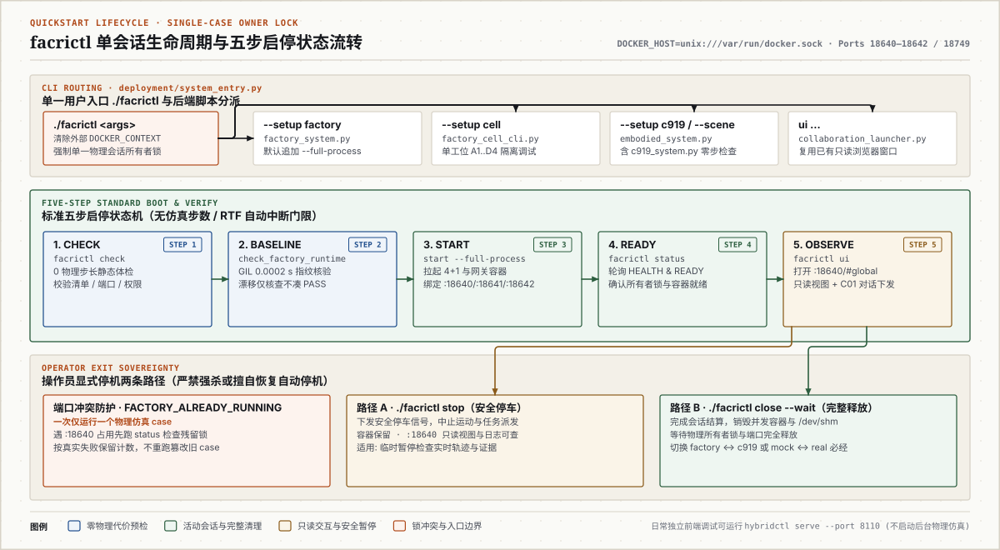

FACRI 将多机物理仿真、真机联调与网页可视化观测收口至根目录统一脚本
facrictl。开发者无需手动配置环境变量或操作底层容器模板，即可依次完成零步预检、系统拉起、页面核验与安全释放。

启动前检查三项前提
启动任何物理仿真或真机联调前，必须先确认以下三项宿主机运行边界：
- Docker 套接字可访问：
facrictl会自动清除终端残留的外部 Docker 上下文，固定连接本机守护套接字；若当前账户无读写权限且无法自动刷新认证组，命令会直接拒绝继续。 - 统一主端口 18640 空闲：平台统一门户入口固定占用主机回环端口 18640（原旧端口 18740 已彻底退役），启动前须确认无残留服务占用。
- 严格遵守「物理仿真一次一个」：宿主机同一时刻只允许存在一个活跃物理仿真实例；切换场景或重启前必须执行完整关闭等待所有者锁释放，严禁直接强杀容器破坏共享内存锁。
五步标准启动与核验
在仓库根目录依次执行以下五步命令，即可完成从静态配置体检到智能工厂四机全流程仿真拉起的完整过程：
# 1. 执行零物理步长静态预检（0 physical steps，不启动容器）
./facrictl --setup factory check --mode daily
# 2. 核对运行时基线清单是否处于授权一致状态
python3 tools/verification/check_factory_runtime_baseline.py
# 3. 启动 Smart Factory 日常完整模式并等待 READY 就绪信号
./facrictl --setup factory start --mode daily --full-process --wait
# 4. 查看当前运行会话状态与容器健康摘要
./facrictl status
# 5. 打开或复用平台浏览器窗口
./facrictl ui就绪后在浏览器访问
http://127.0.0.1:18640/#global，即可在全局态势界面查看三维场景模型、在线机器人状态及底部的语音与文字交互栏。
安全停车与完全退出的区别
| 命令形式 | 底层动作 | 适用场景 | 物理锁与容器状态 |
|---|---|---|---|
./facrictl stop |
下发安全停车信号并保持服务与网页在线 | 临时中止运动与任务派发，继续查阅实时日志与回放 | 容器保留，端口与只读页面可继续访问 |
./facrictl close --wait |
执行会话结算、销毁并发容器并等待锁释放 | 切换场景、切换仿真/真机模式或结束本次工作 | 容器销毁，共享内存与物理所有者锁释放 |
独立前端构建与只读离线开发
当仅需独立启动只读多机协作平台 Web 服务（查看历史回放、设计预览或只读附加已运行系统）而不拉起后台物理仿真时，可直接构建前端静态资源并运行本地服务：
npm ci --prefix apps/collaboration_platform/web
npm run build --prefix apps/collaboration_platform/web
apps/collaboration_platform/hybridctl serve --port 8110前端热更新开发使用
npm run dev --prefix apps/collaboration_platform/web，开发服务器会自动代理至本机
8110 端口；交互控制台服务独立运行于 8088
端口，两条前端进程互不干扰且停止网页不会中断机器人运行时。
展开端口分配、环境细节与常见启动排查
- Docker 权限与底层入口：
facrictl底层调用deployment/system_entry.py，显式清空DOCKER_CONTEXT与 TLS 变量并锁定DOCKER_HOST指向本机 Unix 套接字，必要时通过sg刷新组权限，绝不绕过安全边界。 - 平台固定端口矩阵：主入口与三维界面使用 18640 端口，车队调度总线使用 18641 端口，工装硬件网关使用 18642 端口，带外安全脉冲基址使用 18749 UDP 端口。
- 独立平台 Python
虚拟环境初始化：首次离线搭建平台服务时，在仓库根目录运行
python3 -m venv --system-site-packages apps/collaboration_platform/.venv与apps/collaboration_platform/.venv/bin/python -m pip install -e 'apps/collaboration_platform[dev]'（完整说明见apps/collaboration_platform/README.md）。 - 会话冲突故障处置：若启动遇到
FACTORY_ALREADY_RUNNING或 18640 端口占用报错，先运行./facrictl status核查残留会话，再运行./facrictl close --wait等待锁文件与共享内存完全清理后重试。
下一步阅读导航
- 掌握工厂、单工位与 C919 场景命令参数差异：参阅 CLI 与双场景运行指南。
- 熟悉可视化工作台、三态隔离与 WebGL 视图边界：参阅多机协作平台与 WebGL 视图。
- 配置 1 号机对等真机同步联调流程：参阅真机同步联调指南。
- 理解平台四平面整体设计原则：参阅平台架构总览。